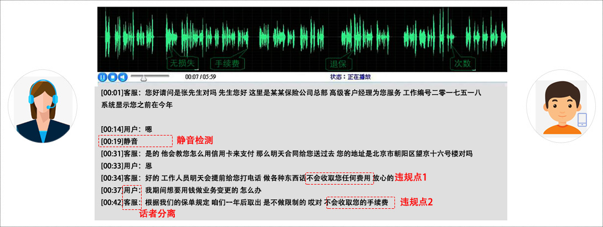

智能语音质检
实现人工坐席与客户通话内容全量转写
什么是智能语音质检？
Scenes
智能语音质检系统实现人工座席与客户通话内容全量转写，并利用关键词检测、静音检测、语速检测、情绪检测等功能，灵活构建质检规则，对人工座席的业务能力、服务态度等进行全面质检，并为人工座席提供标准的话术支持。
-
01
质检部门
客服通话录音全量检测 -
02
客服人员
智能话术支持 -
03
营销部门
客户数据进行挖掘
解决方案的优势
Advantage
-
质检效率高
无缝集成到企业
的信息系统中。 -
支持超大并发
助力企业7×24小时应答服务，
不受人的情绪、疲劳影响。 -
数据安全
保障服务质量及服务水平
的一致性和可控性。
主要功能
THE MAIN FUNTION
-
话者分离
将“客服”语音和“用户”的语音进行分离。
-
语音转写
基于非特定人的、连续自然语音的识别，可针对客服领域录音、及特定业务进行优化，实现通话内容自动转写成文字。
-
关键词检出
通过分析指定语音段，检测到指定关键词，并返回该关键词所在整条语音中的位置。
-
静音检测
通过对客服领域录音中的语音通话内容进行端点检测，实现对通话内容的静音检测。
-
语速检测
对话者分离后的客服语音通话进行语速检测，帮助客服，为用户提供体验最佳的应答语速。
-
情绪检测
能够将客服领域通话录音中的异常情绪检测出来，得到包含发音人情绪异常的数据列表，给出对应的异常产生位置及可信度。
